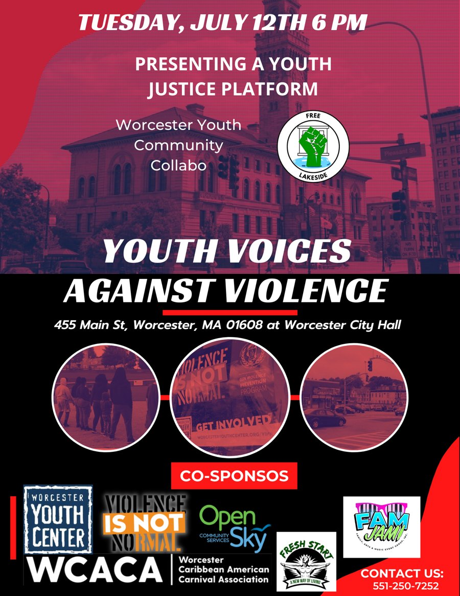
Announcement
Join Free Worcester, amplify your impact. Make a difference in your community.
Our community partners
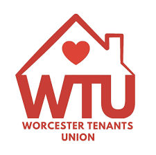
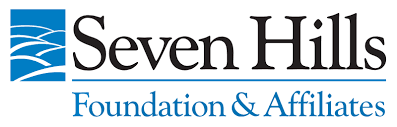
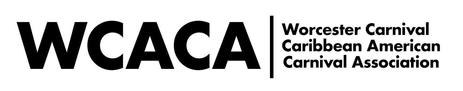
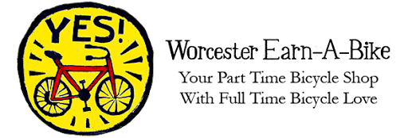
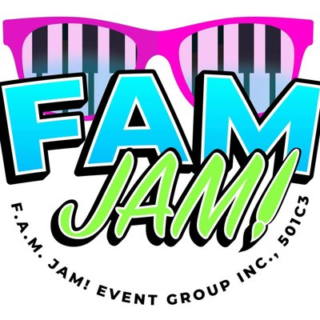
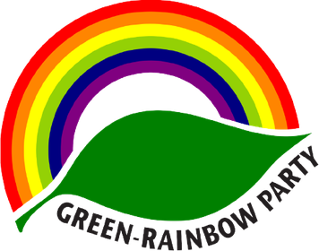
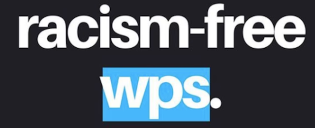
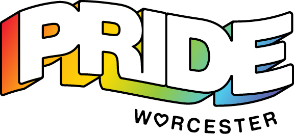
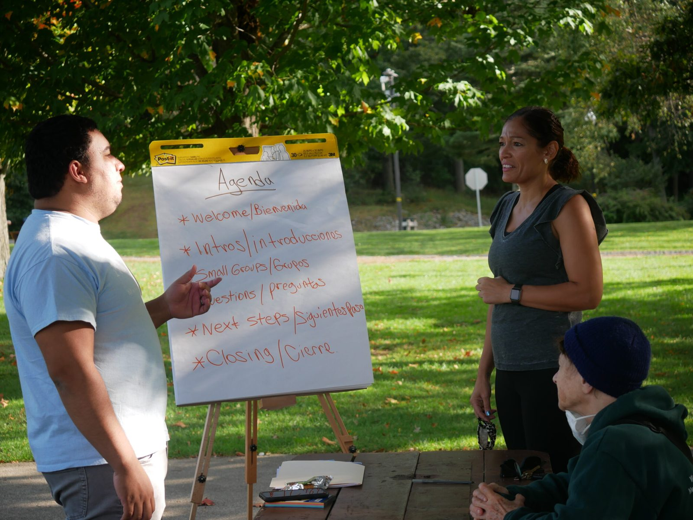
“Free Worcester” is a grassroots organization dedicated to fostering community solidarity and empowerment in Worcester, Massachusetts. Founded by a group of passionate local activists and volunteers, Free Worcester operates on the principle that access to essential resources and services should be available to everyone, regardless of economic status.
Free Worcester’s first Autism Parent Survey, organized with the Worcester Area Autism Task Force, gathered responses from 188 Worcester families between January 2025 and January 2026. The findings and recommendations are now published, with interactive charts and a guide to local autism resources.
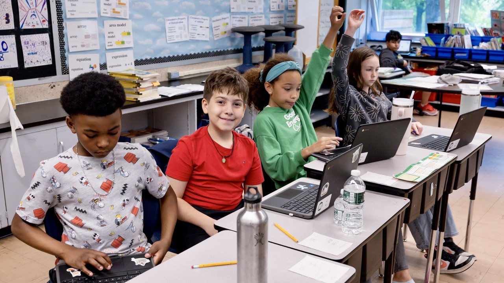
Free Worcester’s current major campaign is the Today’s Readers are Future Leaders / Afterschool Reading Initiative, which aims to provide disadvantaged youths with access to social justice-based educational literature over the summer that will promote equity and inclusiveness across the city of Worcester.
Free Worcester is raising funds to buy 5,000 books over the summer to support social justice-focused childhood reading across demographics and age groups.
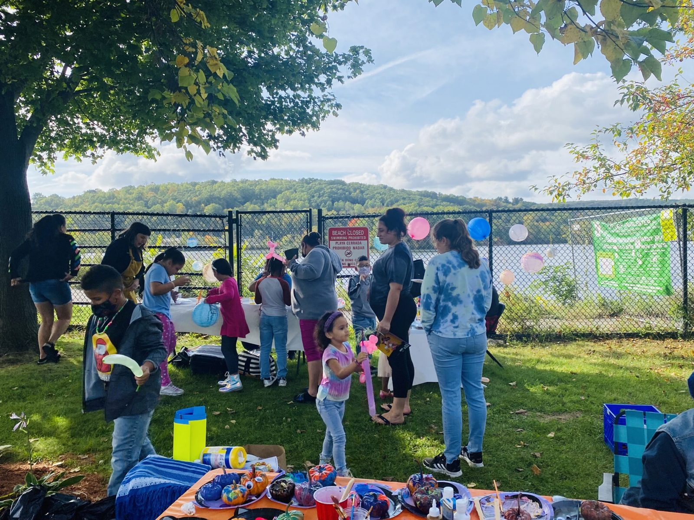
Read about all the ways you can help us grow from an organization into a movement.
We rely heavily on volunteers to help carry out our mission. Join today and become part of the solution.
Every dollar we fundraise goes directly back to improving lives and creating a positive impact.
Simply telling others about our work in the community helps us out.
Free Worcester holds regular rallies and public events. Keep an eye on our social media to see when they are and show up.
Change doesn’t just happen because we want it. We have to fight for it. Only through a unified approach with people across the city working together to better the community can we achieve sustainable and long-lasting change. Join us today to be a part of that change.
Become a Volunteer
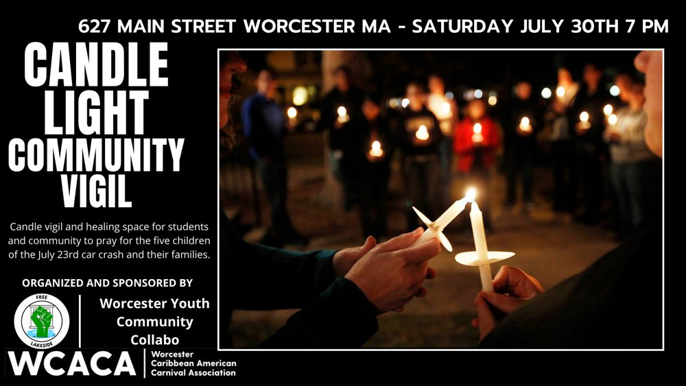
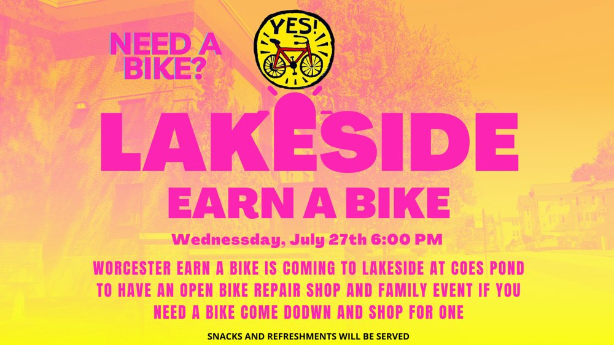